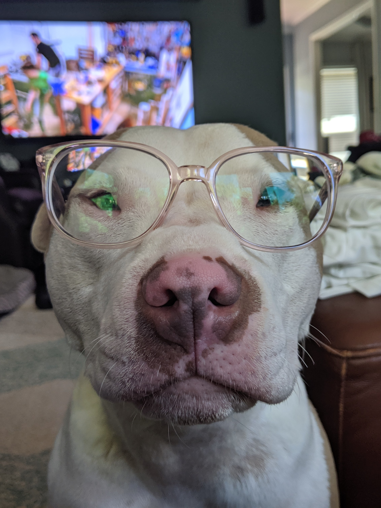
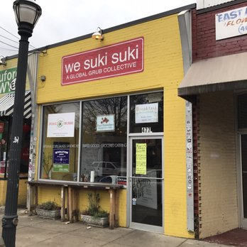
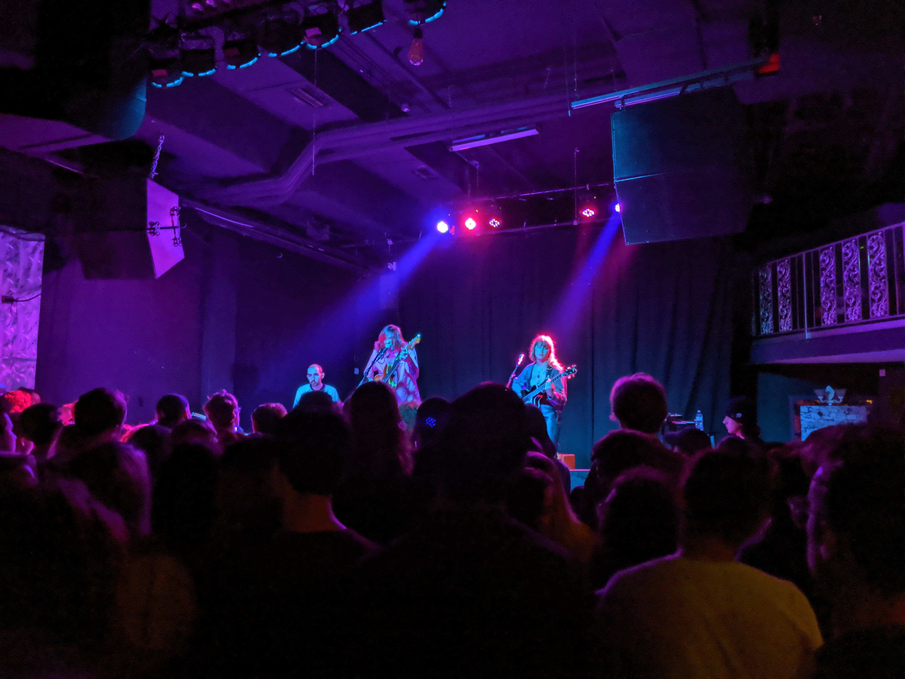

Who am I?
About Me in progress...

Bailey
This is Bailey, our three year old "pocket pit" we adopted in 2016. She's known for thinking she's better than you, having no sense of personal space, and stepping on people's toes. Literally.

Food: We Suki Suki
My favorite way to spend time in Atlanta is finding new places to eat. East Atlanta Village is home to my current favorite spot, We Suki Suki: a Global Grub Collective, which has a restaurant to satisfy every craving. Every time I go, I try something new.

Venue: The Masquerade
Music is a big part of my life and concerts are the best way to enjoy it. I miss the old Masquerade but ever since performing at the new one, I've appreciated the variety of artists they host (and how close it is to campus).